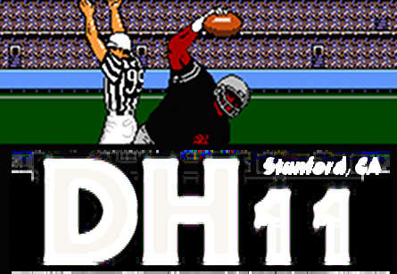

Tecmo’s US headquarters was in Terrence, CA. The greatest Tecmo Bowl player played for the Los Angeles Raiders. If we must orientalize California, let us move beyond hippies.

Originally published at Digital Humanities Specialist. This edition preserves the original text and historical context.
Tecmo’s US headquarters was in Terrence, CA. The greatest Tecmo Bowl player played for the Los Angeles Raiders. If we must orientalize California, let us move beyond hippies.
